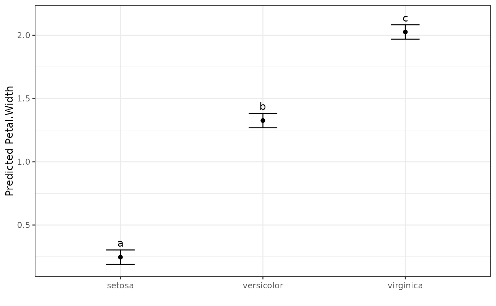
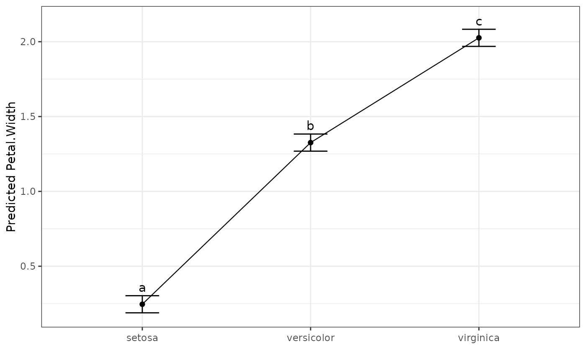
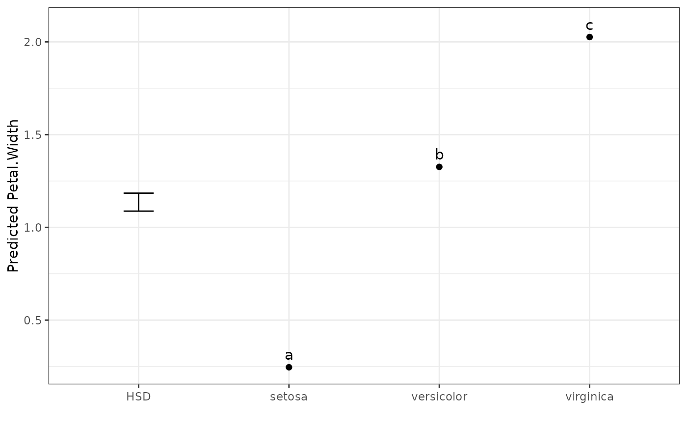

Produces a plot of the predicted means from a multiple_comparisons() result,
with error bars (or a single Tukey's HSD reference bar) and significance-group
lettering.
Usage
# S3 method for class 'mct'
autoplot(
object,
size = 4,
label_height = 0.1,
rotation = 0,
axis_rotation = rotation,
label_rotation = rotation,
type = "point",
errorbar_type = "ci",
include_errorbar = TRUE,
include_lettering = TRUE,
trans_scale = FALSE,
...
)Arguments
- object
An
mctobject, as produced bymultiple_comparisons().- size
Increase or decrease the text size within the plot for treatment labels. Numeric with default value of 4.
- label_height
Height of the text labels above the upper error bar on the plot. Default is 0.1 (10%) of the difference between upper and lower error bars above the top error bar. Values > 1 are interpreted as the actual value above the upper error bar.
- rotation
Rotate the x axis labels and the treatment group labels within the plot. Allows for easier reading of long axis or treatment labels. Number between 0 and 360 (inclusive) - default 0
- axis_rotation
Enables rotation of the x axis independently of the group labels within the plot.
- label_rotation
Enables rotation of the treatment group labels independently of the x axis labels within the plot.
- type
A string specifying the type of plot to display. One of
"point"(the default; point estimates),"line"(point estimates joined by a line), or"column"(also"col"or"bar"; a column graph). Error bars are added according toerrorbar_typeunlessinclude_errorbar = FALSE.- errorbar_type
A string (default
"ci") specifying what the error bars represent."ci"draws an interval around each mean (the interval type chosen viaint.typeinmultiple_comparisons())."hsd"draws a single Tukey's Honest Significant Difference reference bar instead of per-mean intervals. An HSD bar is only meaningful on the model (transformed) scale, so requesting"hsd"plots the means on that scale.- include_errorbar
Logical (default
TRUE). Whether to draw error bars.FALSEomits them entirely (theerrorbar_typeis then ignored).- include_lettering
Logical (default
TRUE). Whether to draw the significance-group lettering above the means.- trans_scale
Logical (default
FALSE). When the means were back-transformed inmultiple_comparisons(),FALSEplots them on the original (back-transformed) scale, whileTRUEplots them on the model (transformed) scale and adds a back-transformed secondary axis. Has no effect when no transformation was used.- ...
Arguments passed to
ggplot2::element_text()for the axis and label text.
Examples
dat.aov <- aov(Petal.Width ~ Species, data = iris)
output <- multiple_comparisons(dat.aov, classify = "Species")
autoplot(output, label_height = 0.5)

# Join the means with a line
autoplot(output, type = "line", label_height = 0.5)

# Show a single Tukey's HSD reference bar instead of per-mean intervals
autoplot(output, errorbar_type = "hsd")
